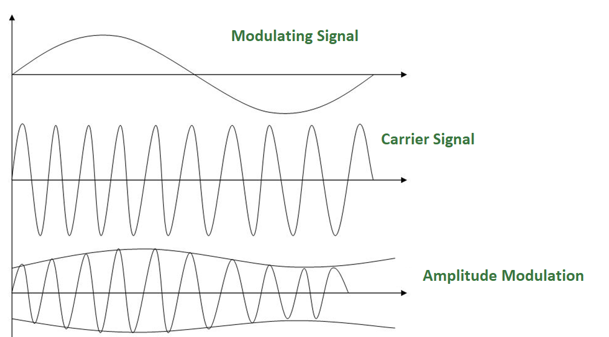
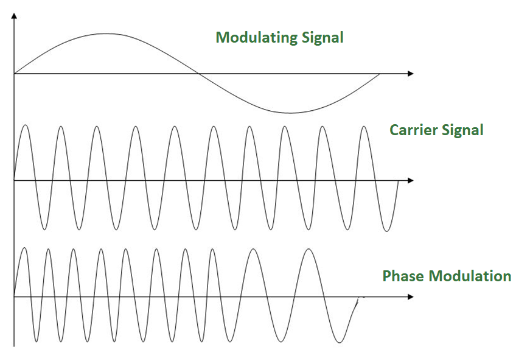

Analog Signal: An analog signal is any continuous signal for which the time varying feature of the signal is a representation of some other time varying quantity i.e., analogous to another time varying Signal.
Analog to Analog Conversion –
Analog-to-analog conversion, or modulation, is the representation of analog information by an analog signal. It is a process by virtue of which a characteristic of carrier wave is varied according to the instantaneous amplitude of the modulating signal. This modulation is generally needed when a bandpass channel is required. Bandpass is a range of frequencies which are transmitted through a bandpass filter which is a filter allowing specific frequencies to pass preventing signals at unwanted frequencies.
Analog to Analog conversion can be done in three ways:
- Amplitude Modulation
- Frequency Modulation
- Phase Modulation
1. AMPLITUDE MODULATION:
The modulation in which the amplitude of the carrier wave is varied according to the instantaneous amplitude of the modulating signal keeping phase and frequency as constant. The figure below shows the concept of amplitude modulation:

AM is normally implemented by using a simple multiplier because the amplitude of the carrier signal needs to be changed according to the amplitude of the modulating signal.
AM bandwidth:
The modulation creates a bandwidth that is twice the bandwidth of the modulating signal and covers a range centered on the carrier frequency.
Bandwidth= 2fm
2. FREQUENCY MODULATION –
The modulation in which the frequency of the carrier wave is varied according to the instantaneous amplitude of the modulating signal keeping phase and amplitude as constant. The figure below shows the concept of frequency modulation:

FM is normally implemented by using a voltage-controlled oscillator as with FSK. The frequency of the oscillator changes according to the input voltage which is the amplitude of the modulating signal.
FM bandwidth:
- The bandwidth of a frequency modulated signal varies with both deviation and modulating frequency.
If modulating frequency (Mf) 0.5, wide band Fm signal. - For a narrow band Fm signal, bandwidth required is twice the maximum frequency of the modulation, however for a wide band Fm signal the required bandwidth can be very much larger, with detectable sidebands spreading out over large amounts of the frequency spectrum.
3. PHASE MODULATION:
The modulation in which the phase of the carrier wave is varied according to the instantaneous amplitude of the modulating signal keeping amplitude and frequency as constant. The figure below shows the concept of frequency modulation:

Phase modulation is practically similar to Frequency Modulation, but in Phase modulation frequency of the carrier signal is not increased. It is normally implemented by using a voltage-controlled oscillator along with a derivative. The frequency of the oscillator changes according to the derivative of the input voltage which is the amplitude of the modulating signal.
PM bandwidth:
- For small amplitude signals, PM is similar to amplitude modulation (AM) and exhibits its unfortunate doubling of baseband bandwidth and poor efficiency.
- For a single large sinusoidal signal, PM is similar to FM, and its bandwidth is approximately, 2 (h+1) Fm where h= modulation index.
Thus, Modulation allows us to send a signal over a bandpass frequency range. If every signal gets its own frequency range, then we can transmit multiple signals simultaneously over a single channel, all using different frequency ranges.